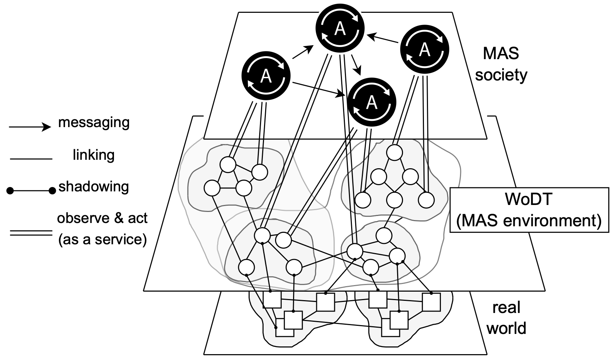

EMAS @ AAMAS, 9-10/5/2022
Stefano Mariani*, Marco Picone*, Alessandro Ricci°
*Università di Modena e Reggio Emilia °Università di Bologna
Goal: shed light on responsibilities and opportunities for synergistic exploitation!
Saracco, R.: Digital twins: Bridging physical space and cyberspace. Computer 52(12), 58–64 (2019)
This separation allows for assigning clear responsibilities during system design!
Omicini, A., Ricci, A., Viroli, M.: Artifacts in the A&A meta-model for multi-agent systems. Autonomous Agents and Multi-Agent Systems 17(3), 432–456 (2008)
Agents delegate to DTs tasks requiring knowledge of the local PA context
Web of Digital Twins: application-dependent knowledge graphs, dynamically established amongst DTs depending on CPS dynamics and application goals
Ricci, A., Croatti, A., Mariani, S., Montagna, S., Picone, M.: Web of digital twins.ACM Trans. Internet Technol. (dec 2021). https://doi.org/10.1145/3507909
DTs delegate to agents "intelligent" tasks (reasoning, prediction, ...) that requirebroader context w.r.t. the local one accessible to DTs
Agents as mediators (left): DTs express the intended interaction semantics (e.g. CFP), delegating to agents the figuring out of interaction sequences
Agents as orchestrators (right): DTs seamlessly execute while agents take care of"DevOps" (e.g. creation, linking, migration, scaling, disposal, ...)
As decision making depends on the CPS state (and viceversa), synergistic exploitation of agents and DTs is more of a requirement than a nice to have!
(we hope so 😊)